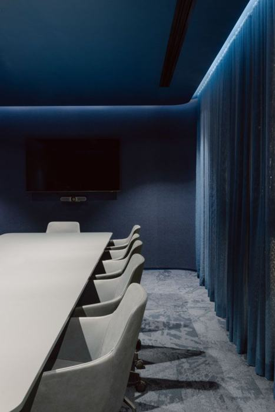
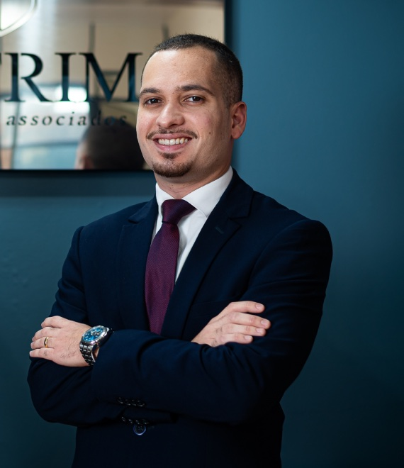

01
Full service empresarial
Do contencioso ao consultivo, cobrindo todas as frentes jurídicas do seu negócio em um só lugar.
experiência jurídica
Duas décadas assessorando empresas, transportadoras e sindicatos, com estrutura full service para cobrir todas as frentes jurídicas do seu negócio.
+20 anos
de atuação empresarial
3 unidades
Rio de Janeiro · Barra Mansa · Brasília
17+ áreas
de atuação jurídica
Full service
Atuação em todas as áreas do Direito para empresas que desejam excelência e comprometimento.
sobre o escritório
Coragem, técnica e comprometimento.
Não somos apenas um escritório que atende empresas. Somos o jurídico delas.
01
Do contencioso ao consultivo, cobrindo todas as frentes jurídicas do seu negócio em um só lugar.
02
Mais de 20 anos assessorando transportadoras e empresas de fretamento com profundidade que poucos escritórios têm.
03
Atuação especializada em Brasília perante o STJ, STF, TST, Tribunais de Contas e Administração Pública, onde as decisões mais importantes são tomadas.
diferenciais
Profundidade construída ao longo de mais de 20 anos de imersão nos setores que o escritório atende.
Muito mais do que consultoria pontual: somos o jurídico externo completo das empresas que atendemos, presentes em todas as frentes, do dia a dia à decisão estratégica.
Expertise jurídica consolidada em um setor que tem dinâmicas próprias. Membros da NTU — Associação Nacional das Empresas de Transportes Urbanos — e do SINDPASS, assessoramos transportadoras com profundidade que poucos escritórios têm.
Atuação estratégica junto a sindicatos e entidades patronais em disputas coletivas, questões regulatórias e interlocuções institucionais. Uma expertise construída ao longo de décadas.
A inauguração da sede na capital fluminense amplia a presença do Cotrim Advogados no centro jurídico do Estado, reforçando sua atuação perante o Tribunal de Justiça do Rio de Janeiro, o Tribunal Regional do Trabalho e o Tribunal Regional Federal — em demandas empresariais complexas, litígios estratégicos e casos que exigem acompanhamento próximo e qualificado.
A nova filial em Brasília fortalece a atuação do Cotrim Advogados perante o STF, STJ, TST, Administração Pública Federal, Tribunais de Contas, órgãos de controle, agências reguladoras e demais instâncias nacionais de decisão.
17 áreas de atuação integradas, coordenadas por uma equipe com mais de 20 anos de experiência em direito empresarial. Clique em cada área para saber mais.
Ver todas as áreas de atuação →Gestão preventiva de passivos, defesa em reclamações, negociação coletiva e representação perante TRT e TST.
Saber mais →Consultoria e contencioso em demandas cíveis empresariais: responsabilidade civil, contratos, cobranças e indenizações.
Saber mais →Planejamento tributário, contencioso administrativo e judicial, discussão de créditos e autuações fiscais.
Saber mais →Estruturação societária, governança e assessoria estratégica em todas as frentes jurídicas do negócio.
Saber mais →Elaboração, revisão e negociação de contratos empresariais e consultoria especializada em franquia.
Saber mais →Novidade: Expansão nacional

A expansão do Cotrim Advogados Associados para o Rio de Janeiro capital e para Brasília representa uma nova etapa da trajetória do escritório: uma presença nacional mais estruturada, próxima dos principais centros decisórios do país e preparada para atender demandas empresariais de maior complexidade.
No Rio de Janeiro, o escritório reforça sua atuação perante o Tribunal de Justiça do Estado do Rio de Janeiro, o TRT e o TRF, com presença estratégica na capital com estrutura voltada ao acompanhamento qualificado de litígios relevantes, demandas sensíveis e processos que exigem atuação técnica, próxima e coordenada.
Em Brasília, o Cotrim Advogados consolida uma frente estratégica de atuação perante os Tribunais Superiores — STF, STJ e TST —, a Administração Pública Federal, os Tribunais de Contas, órgãos de controle, agências reguladoras e demais instâncias nacionais de decisão. A presença na capital federal permite ao escritório oferecer acompanhamento qualificado em processos judiciais, administrativos, regulatórios e institucionais, especialmente em matérias que envolvem direito público, direito administrativo sancionador, controle externo, licitações, contratos administrativos, setores regulados, políticas públicas, relações governamentais e defesa de interesses empresariais perante órgãos federais.
Com essa expansão, o Cotrim Advogados amplia sua capacidade de atuação em quatro frentes essenciais: a base empresarial consolidada no interior do Rio de Janeiro, a presença fortalecida na capital fluminense, a atuação estratégica perante Tribunais Superiores e a representação qualificada de clientes empresariais perante órgãos da Administração Pública, Tribunais de Contas, agências reguladoras e demais instituições nacionais sediadas em Brasília.
Experiência que se mede em décadas. Especialização que se mede em resultados.
CEO
[ Luiz Antonio Cotrim Moreira ]
OAB/RJ 103.942 · Especialista em demandas complexas e estratégicas.
Sócio
[ João Victor Arantes Silva ]
OAB/RJ 151.161 · Especialista em Direito do Trabalho e negociações coletivas.
Sócio
[ Flávio Lourenço Brandão ]
OAB/RJ 157.474 · Especialista em Direito Civil e Processual Civil.
Sócio

[ Luiz Henrique Saúde Dantas Cotrim ]
OAB/RJ 250.737 · Especialista em Direito Empresarial.
Fale com o Cotrim Advogados Associados. Entendemos o seu setor, conhecemos os tribunais que importam e estamos prontos para ser o jurídico estratégico que a sua empresa precisa.